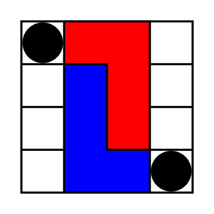
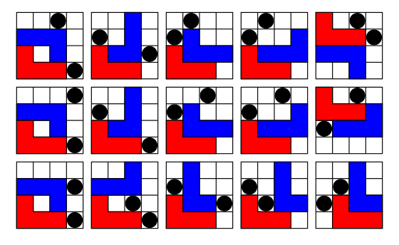
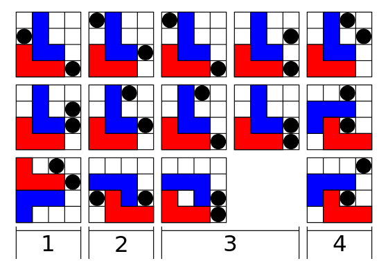

Tämä peli voi tallentaa päättyneitä ja keskeneräisiä pelisessioita nykyisellä pelitilanteella. Valitsemalla kyseisen vaihtoehdon valikosta näet luettelon tallennetuista sessioista ja niiden pelilaudoista. Voit myös poistaa vanhoja pelisessioita painamalla rivillä olevaa poistokuvaketta. Voit valita keskeneräisen pelin jatkaaksesi peliä siitä, mihin pelaajat jäivät.
Pelissä 2 pelaajalla on kummallakin yksi L-nappula. Pelaajan 1 L-nappula on punainen (merkitty valkoisella numerolla 1) ja pelaajan 2 L-nappula on sininen (merkitty valkoisella numerolla 2). Laudalla on myös 2 neutraalia mustaa nappulaa (kolikoita).
Pelissä L-nappulaa ohjataan hiirellä ja näppäimistöllä. Siirrä L-nappulan siirtokehys haluamaasi paikkaan hiiren osoittimella. Voit pyörittää kehystä hiiren rullalla tai R-näppäimellä (tai Pyöritä-painikkeella). Voit peilata kehyksen kaksoisnapsauttamalla sitä tai F-näppäimellä (tai Peilaa-painikkeella). Aseta L-nappula haluamaasi ruutuun napsauttamalla hiirellä, ja vahvista siirto painamalla V- tai Enter-näppäintä (tai Vahvista-painiketta). Voit peruuttaa asetetun L-nappulan takaisin hiiren osoittimeen painamalla peruutuspainiketta (Escape, C tai Backspace). L-nappulan siirron jälkeen voit valinnaisesti siirtää kolikkoa napsauttamalla kolikkoa ja sen jälkeen haluamaasi tyhjää ruutua, tai ohittaa tämän vaiheen painamalla S-näppäintä (tai Ohita-painiketta).

L-peli on yksinkertainen abstrakti strategiapeli, jonka on keksinyt Edward de Bono. Se esiteltiin hänen kirjassaan The Five-Day Course in Thinking (1967).
L-peli on kahden pelaajan peli, jota pelataan 4×4-ruutuisella laudalla. Kummallakin pelaajalla on 3×2-ruudun kokoinen L-muotoinen nappula (tetromino), ja laudalla on kaksi 1×1-kokoista neutraalia nappulaa.
Jokaisella vuorolla pelaajan on ensin siirrettävä L-nappulansa, ja sen jälkeen hän voi valinnaisesti siirtää toista neutraaleista nappuloista. Peli voitetaan saattamalla vastustaja tilanteeseen, jossa hän ei pysty siirtämään L-nappulaansa uuteen paikkaan.
Nappulat eivät saa olla päällekkäin tai peittää muita nappuloita, eivätkä ne saa mennä laudan ulkopuolelle. L-nappulaa siirrettäessä se nostetaan ja asetetaan tyhjiin ruutuihin mihin tahansa laudalla. Sitä voidaan kääntää tai jopa kääntää ylösalaisin; ainoa sääntö on, että sen on päädyttävä eri asentoon kuin missä se oli – peittäen näin vähintään yhden ruudun, jota se ei aiemmin peittänyt. Neutraalin nappulan siirtämiseksi pelaaja yksinkertaisesti nostaa sen ja asettaa sen tyhjään ruutuun mihin tahansa laudalla.
Yksi perusstrategia on käyttää neutraalia nappulaa ja omaa nappulaa 3×3-neliön estämiseen yhdessä kulmassa ja käyttää neutraalia nappulaa estämään vastustajan L-nappulan siirtyminen peilikuvamaiseen asentoon. Toinen perusstrategia on siirtää L-nappula estämään puolet laudasta ja käyttää neutraaleja nappuloita estämään vastustajan mahdolliset vaihtoehtoiset asennot.
Nämä asennot voidaan usein saavuttaa, kun neutraali nappula jätetään yhteen kahdeksasta tappajapaikasta laudan reunalla. Tappajapaikat ovat reunan ruutuja, jotka eivät ole kulmissa. Seuraavalla siirrolla aiemmin asetettu tappaja joko tehdään osaksi omaa neliötä tai sitä käytetään estämään reunapaikka, ja muodostetaan neliö- tai puoli-lautablock omalla L:llä ja siirretyllä neutraalilla nappulalla.
Kaikki asennot, Punaisen vuoro, joissa Punainen häviää täydelliselle Siniselle, ja suurin määrä siirtoja jäljellä Punaiselle. Katsomalla yhden siirron eteenpäin ja varmistamalla, ettei koskaan päädy mihinkään yllä olevista asennoista, voi välttää häviämisen.

Kaikki mahdolliset loppuasennot, Sininen on voittanut.

Pelissä, jossa on kaksi täydellistä pelaajaa, kumpikaan ei koskaan voita tai häviä. L-peli on tarpeeksi pieni ollakseen täysin ratkaistavissa. On olemassa 2296 erilaista mahdollista pätevää tapaa, joilla nappulat voivat olla, laskematta asennon kääntämistä tai peilaamista uudeksi asennoksi ja pitäen kahta neutraalia nappulaa identtisinä. Mikä tahansa asento voidaan saavuttaa pelin aikana, riippumatta siitä kenen vuoro on. Kumpikin pelaaja on hävinnyt 15:ssä näistä asennoista, jos on kyseisen pelaajan vuoro. Häviöasennoissa häviävän pelaajan L-nappula koskettaa kulmaa. Kumpikin pelaaja häviää pian täydelliselle pelaajalle myös 14 muussa asennossa. Pelaaja pystyy vähintään pakottamaan tasapelin (pelaamalla loputtomiin häviämättä) lopuista 2267 asennosta.
Vaikka kumpikaan pelaaja ei pelaisi täydellisesti, puolustuspeli voi jatkua loputtomiin, jos pelaajat ovat liian varovaisia siirtääkseen neutraalia nappulaa tappajapaikkoihin. Jos molemmat pelaajat ovat tällä tasolla, sääntöjen sudden death -variantti sallii molempien neutraalien nappuloiden siirtämisen siirron jälkeen. Pelaaja, joka pystyy katsomaan kolme siirtoa eteenpäin, voi voittaa puolustuspelin käyttämällä vakiosääntöjä.
"Games and Puzzles 1974-11: Iss 30". A H C Publications. Marraskuu 1974.
de Bono, Edward (1967). "The L Game: Strategic Thinking". The Five-Day Course in Thinking. Basic Books Inc. pp. 149–206. LCCN 67027438.
Parlett, David (1999). "The L-Game". The Oxford History of Board Games. Oxford University Press Inc. pp. 161–62. ISBN 0-19-212998-8.
Pritchard, D. B. (1982). "The L Game". Brain Games. Penguin Books Ltd. pp. 107–12. ISBN 0-14-00-5682-3.
L-peli Edward de Bonon virallisella sivustolla (arkistoitu)
Interaktiivinen verkkopohjainen L-peli kirjoitettu JavaScriptillä